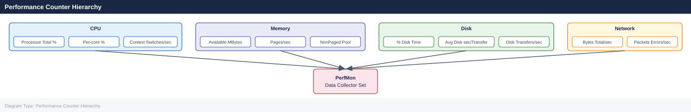

Windows Server — Health Checks¶
Before you begin¶
- Access: Local Administrator or Domain Admin on target hosts
- Timing: safe to run during business hours unless a step is marked ⚠ (causes interruption)
- Dependencies: no active upgrades or migrations on the same infrastructure
- Logging: capture command output — paste into the change record on completion
Run This Routine¶
Run these PowerShell commands in sequence at the start of any health check session or before making changes to a Windows Server.
# 1. OS version
Get-ComputerInfo | Select-Object WindowsProductName, OsVersion
# 2. Uptime
(Get-Date) - (gcim Win32_OperatingSystem).LastBootUpTime
# 3. Disk space
Get-PSDrive -PSProvider FileSystem | Select-Object Name,
@{n='FreeGB'; e={[math]::Round($_.Free/1GB, 1)}},
@{n='UsedGB'; e={[math]::Round($_.Used/1GB, 1)}}
# 4. Failed auto-start services
Get-Service | Where-Object { $_.StartType -eq 'Automatic' -and $_.Status -ne 'Running' }
# 5. Event log errors — last 24 hours
Get-EventLog -LogName System -EntryType Error -After (Get-Date).AddHours(-24) | Select-Object -First 20
# 6. CPU and memory snapshot
Get-Counter '\Processor(_Total)\% Processor Time', '\Memory\Available MBytes'
# 7. Network adapter status
Get-NetAdapter | Select-Object Name, Status, LinkSpeed
# 8. Pending reboot check
Test-Path 'HKLM:\SYSTEM\CurrentControlSet\Control\Session Manager\PendingFileRenameOperations'
# 9. Windows Firewall status
Get-NetFirewallProfile | Select-Object Name, Enabled
# 10. Last Windows Updates installed
Get-HotFix | Sort-Object InstalledOn -Descending | Select-Object -First 5
Disk Space¶
# All drives with free space
Get-PSDrive -PSProvider FileSystem |
Select-Object Name,
@{N="Used(GB)"; E={[math]::Round($_.Used/1GB,2)}},
@{N="Free(GB)"; E={[math]::Round($_.Free/1GB,2)}},
@{N="Total(GB)"; E={[math]::Round(($_.Used+$_.Free)/1GB,2)}},
@{N="Free%"; E={[math]::Round($_.Free/($_.Used+$_.Free)*100,1)}} |
Where-Object {$_."Total(GB)" -gt 0}
Alert threshold: warn at < 20% free, critical at < 10% free.
CPU and Memory¶
# CPU utilisation (5-second average)
Get-Counter '\Processor(_Total)\% Processor Time' -SampleInterval 5 -MaxSamples 3 |
Select-Object -ExpandProperty CounterSamples |
Select-Object CookedValue
# Memory usage
$os = Get-CimInstance Win32_OperatingSystem
[PSCustomObject]@{
TotalGB = [math]::Round($os.TotalVisibleMemorySize/1MB, 2)
FreeGB = [math]::Round($os.FreePhysicalMemory/1MB, 2)
UsedPct = [math]::Round(($os.TotalVisibleMemorySize - $os.FreePhysicalMemory) / $os.TotalVisibleMemorySize * 100, 1)
}
# Top 10 processes by CPU
Get-Process | Sort-Object CPU -Descending | Select-Object -First 10 Name, CPU, WorkingSet, Id
Windows Defender Status¶
# Defender status
Get-MpComputerStatus | Select-Object `
AMServiceEnabled, AntispywareEnabled, AntivirusEnabled,
RealTimeProtectionEnabled, AntivirusSignatureLastUpdated,
QuickScanStartTime, FullScanStartTime
# Check for threats
Get-MpThreatDetection | Select-Object ThreatID, ProcessName, ActionSuccess, InitialDetectionTime
Scheduled Tasks¶
# Tasks that failed in last 24 hours
Get-ScheduledTask | Where-Object State -ne Disabled |
ForEach-Object {
$info = $_ | Get-ScheduledTaskInfo
[PSCustomObject]@{
TaskName = $_.TaskName
TaskPath = $_.TaskPath
LastResult = $info.LastTaskResult
LastRun = $info.LastRunTime
}
} |
Where-Object LastResult -ne 0 |
Sort-Object LastRun -Descending
System Overview¶
# Uptime
(Get-Date) - (gcim Win32_OperatingSystem).LastBootUpTime
# OS version, build, and hostname
Get-ComputerInfo | Select-Object CsName, OsName, OsVersion, OsBuildNumber, WindowsVersion
# Last 5 system events (errors/warnings)
Get-WinEvent -LogName System -MaxEvents 100 |
Where-Object { $_.LevelDisplayName -in "Error","Warning" } |
Select-Object -First 5 TimeCreated, LevelDisplayName, Message
CPU and Memory¶
# CPU usage (10-second sample)
$cpu = Get-Counter '\Processor(_Total)\% Processor Time' -SampleInterval 2 -MaxSamples 5
$cpu.CounterSamples.CookedValue | Measure-Object -Average | Select-Object Average
# Memory
$os = Get-CimInstance Win32_OperatingSystem
[PSCustomObject]@{
TotalGB = [math]::Round($os.TotalVisibleMemorySize/1MB, 1)
FreeGB = [math]::Round($os.FreePhysicalMemory/1MB, 1)
UsedPct = [math]::Round(($os.TotalVisibleMemorySize - $os.FreePhysicalMemory) / $os.TotalVisibleMemorySize * 100, 1)
}
# Top CPU-consuming processes
Get-Process | Sort-Object CPU -Descending | Select-Object -First 10 Name, Id, CPU, WorkingSet
Disk¶
# Disk free space — flag below 20%
Get-PSDrive -PSProvider FileSystem | Select-Object Name,
@{N="FreeGB"; E={ [math]::Round($_.Free/1GB, 1) }},
@{N="TotalGB"; E={ [math]::Round(($_.Used + $_.Free)/1GB, 1) }},
@{N="UsedPct"; E={ [math]::Round($_.Used/($_.Used + $_.Free)*100, 1) }} |
Where-Object { $_.UsedPct -gt 80 }
# Disk performance counters
Get-Counter '\PhysicalDisk(*)\Avg. Disk sec/Transfer' -SampleInterval 2 -MaxSamples 3 |
ForEach-Object { $_.CounterSamples | Select-Object Path, CookedValue }
Services¶
# Services in a stopped state that should be running (auto start)
Get-Service | Where-Object { $_.StartType -eq "Automatic" -and $_.Status -ne "Running" } |
Select-Object Name, DisplayName, Status
# Check a specific service
Get-Service -Name <ServiceName> | Select-Object Name, Status, StartType
Event Log Quick Review¶
# System errors in last 24 hours
Get-WinEvent -FilterHashtable @{ LogName='System'; Level=2; StartTime=(Get-Date).AddHours(-24) } |
Select-Object TimeCreated, Id, Message | Select-Object -First 10
# Application errors in last 24 hours
Get-WinEvent -FilterHashtable @{ LogName='Application'; Level=2; StartTime=(Get-Date).AddHours(-24) } |
Select-Object TimeCreated, Id, Message | Select-Object -First 10
Network¶
# Interface status
Get-NetAdapter | Select-Object Name, Status, LinkSpeed, MacAddress
# IP addresses
Get-NetIPAddress | Where-Object { $_.AddressFamily -eq "IPv4" } |
Select-Object InterfaceAlias, IPAddress, PrefixLength
# Active TCP connections
Get-NetTCPConnection -State Established |
Select-Object LocalAddress, LocalPort, RemoteAddress, RemotePort, OwningProcess |
Sort-Object RemoteAddress | Select-Object -First 20
# Test DNS resolution
Resolve-DnsName corp.local
Pending Reboots¶
# Check for pending reboot from Windows Update or software installs
$rebootPending = $false
if (Get-ItemProperty "HKLM:\SOFTWARE\Microsoft\Windows\CurrentVersion\WindowsUpdate\Auto Update\RebootRequired" -EA SilentlyContinue) { $rebootPending = $true }
if (Get-ItemProperty "HKLM:\SYSTEM\CurrentControlSet\Control\Session Manager" -Name PendingFileRenameOperations -EA SilentlyContinue) { $rebootPending = $true }
"Reboot Pending: $rebootPending"
Performance Counter Hierarchy¶

Health Check Summary¶
| Check | Command | Healthy |
|---|---|---|
| Uptime reasonable | (Get-Date) - LastBootUpTime |
No unexpected recent reboot |
| CPU usage | Get-Counter |
< 80% sustained |
| Memory available | Get-CimInstance Win32_OperatingSystem |
> 20% free |
| No disk > 80% | Get-PSDrive |
All < 80% used |
| No stopped auto services | Get-Service |
0 stopped auto-start |
| No System errors (24h) | Get-WinEvent |
0 critical errors |
| Network adapters up | Get-NetAdapter |
All status = Up |
| Pending reboot | Registry check | $false |
Event Logs¶
| Log | Path | Content |
|---|---|---|
| System | System |
OS events, driver failures, service stops, hardware |
| Application | Application |
App errors, .NET exceptions, SQL, IIS |
| Security | Security |
Authentication, account management, privilege use |
| Setup | Setup |
Windows Update, component installs |
| Windows PowerShell | Windows PowerShell |
PS script execution |
| Sysmon | Microsoft-Windows-Sysmon/Operational |
Process creation, network, file events (if deployed) |
Get-WinEvent — Common Queries¶
# Errors in System log — last 24 hours
Get-WinEvent -FilterHashtable @{
LogName = 'System'
Level = 2
StartTime = (Get-Date).AddHours(-24)
} | Select-Object TimeCreated, Id, Message | Format-List
# Application errors — last 6 hours
Get-WinEvent -FilterHashtable @{
LogName = 'Application'
Level = 2
StartTime = (Get-Date).AddHours(-6)
} | Select-Object -First 20 TimeCreated, Id, Message
# Security log — failed logons (Event ID 4625)
Get-WinEvent -FilterHashtable @{
LogName = 'Security'
Id = 4625
StartTime = (Get-Date).AddHours(-24)
} | Select-Object TimeCreated, Message | Select-Object -First 20
Key Security Event IDs¶
| Event ID | Description |
|---|---|
| 4624 | Successful logon |
| 4625 | Failed logon |
| 4634 | Logoff |
| 4688 | Process creation |
| 4720 | User account created |
| 4740 | Account locked out |
| 7036 | Service started or stopped |
| 41 | Kernel power — unexpected reboot |
| 6008 | Unexpected shutdown |
Log Size and Retention¶
# Check current log sizes and limits
Get-WinEvent -ListLog System, Application, Security |
Select-Object LogName, MaximumSizeInBytes,
@{N="CurrentSizeMB"; E={ [math]::Round($_.FileSize/1MB,1) }},
LogMode
# Set max size (e.g., Security log to 1 GB)
wevtutil sl Security /ms:1073741824
Performance¶
Quick Performance Snapshot¶
# CPU usage (5-sample average)
$cpu = Get-Counter '\Processor(_Total)\% Processor Time' -SampleInterval 2 -MaxSamples 5
[math]::Round(($cpu.CounterSamples.CookedValue | Measure-Object -Average).Average, 1)
# Memory
$os = Get-CimInstance Win32_OperatingSystem
[PSCustomObject]@{
TotalGB = [math]::Round($os.TotalVisibleMemorySize/1MB, 1)
FreeGB = [math]::Round($os.FreePhysicalMemory/1MB, 1)
UsedPct = [math]::Round(($os.TotalVisibleMemorySize - $os.FreePhysicalMemory)/$os.TotalVisibleMemorySize*100, 1)
}
# Top processes by CPU
Get-Process | Sort-Object CPU -Descending | Select-Object -First 10 Name, Id,
@{N="CPU%"; E={ [math]::Round($_.CPU, 1) }}, WorkingSet
# Top processes by memory
Get-Process | Sort-Object WorkingSet -Descending | Select-Object -First 10 Name, Id,
@{N="MemMB"; E={ [math]::Round($_.WorkingSet/1MB, 1) }}
Performance Thresholds¶
| Counter | Warning | Critical |
|---|---|---|
| CPU % Processor Time | > 70% sustained | > 90% sustained |
| Memory Available MB | < 20% of total | < 10% of total |
| Pages/sec | > 100/sec | > 1,000/sec |
| Disk Avg. sec/Transfer | > 15 ms | > 25 ms |
| Disk % Disk Time | > 80% | > 95% |
| Network % Bandwidth | > 70% | > 90% |
Performance Counters¶
# CPU — sustained above 85% = problem
Get-Counter '\Processor(_Total)\% Processor Time' -SampleInterval 5 -MaxSamples 12 |
ForEach-Object { $_.CounterSamples | Select-Object Path, CookedValue }
# Memory — pages/sec above 1000 sustained = memory pressure
Get-Counter '\Memory\Pages/sec', '\Memory\Available MBytes' -SampleInterval 5 -MaxSamples 6
# Disk — latency above 20ms = problem
Get-Counter '\PhysicalDisk(*)\Avg. Disk sec/Transfer' -SampleInterval 2 -MaxSamples 5
# Network — throughput and errors
Get-Counter '\Network Interface(*)\Bytes Total/sec', '\Network Interface(*)\Packets Received Errors'
Data Collector Sets (PerfMon)¶
# Create a data collector set from command line
logman create counter "PerfBaseline" ^
-c "\Processor(_Total)\% Processor Time" ^
"\Memory\Available MBytes" ^
"\PhysicalDisk(*)\Avg. Disk sec/Transfer" ^
"\Network Interface(*)\Bytes Total/sec" ^
-si 00:00:05 ^
-f bincirc ^
-max 500 ^
-o C:\PerfLogs\baseline
logman start PerfBaseline
logman stop PerfBaseline
CPU and Memory¶
Commands to assess processor utilisation and memory availability, and identify resource-intensive processes.
# CPU utilisation — 5-sample average
$cpu = Get-Counter '\Processor(_Total)\% Processor Time' -SampleInterval 2 -MaxSamples 5
[math]::Round(($cpu.CounterSamples.CookedValue | Measure-Object -Average).Average, 1)
# Per-core CPU utilisation
Get-Counter '\Processor(*)\% Processor Time' -SampleInterval 2 -MaxSamples 3 |
ForEach-Object { $_.CounterSamples | Select-Object InstanceName, CookedValue }
# Memory summary
$os = Get-CimInstance Win32_OperatingSystem
[PSCustomObject]@{
TotalGB = [math]::Round($os.TotalVisibleMemorySize / 1MB, 1)
FreeGB = [math]::Round($os.FreePhysicalMemory / 1MB, 1)
UsedPct = [math]::Round(($os.TotalVisibleMemorySize - $os.FreePhysicalMemory) / $os.TotalVisibleMemorySize * 100, 1)
}
# Top 10 processes by CPU
Get-Process | Sort-Object CPU -Descending | Select-Object -First 10 Name, Id, CPU, WorkingSet
# Top 10 processes by memory
Get-Process | Sort-Object WorkingSet -Descending | Select-Object -First 10 Name, Id,
@{N="MemMB"; E={[math]::Round($_.WorkingSet / 1MB, 1)}}
What to look for:
- CPU above 80% sustained indicates saturation — identify the top process and assess whether it is expected.
- Available MBytes below 10% of total RAM indicates memory pressure; the system may be paging.
- A single process consuming excessive CPU or memory and growing over time may indicate a memory leak or runaway thread.
- Pages/sec counter above 100 sustained indicates the system is actively paging to disk.
Disk Health¶
Commands to check free space, disk I/O latency, and identify large consumers.
# Disk free space — flag volumes below 20% free
Get-PSDrive -PSProvider FileSystem | Select-Object Name,
@{N="FreeGB"; E={[math]::Round($_.Free/1GB, 1)}},
@{N="TotalGB"; E={[math]::Round(($_.Used + $_.Free)/1GB, 1)}},
@{N="UsedPct"; E={[math]::Round($_.Used / ($_.Used + $_.Free) * 100, 1)}} |
Where-Object { $_.TotalGB -gt 0 }
# Disk I/O latency — above 20ms average is a concern
Get-Counter '\PhysicalDisk(*)\Avg. Disk sec/Transfer' -SampleInterval 2 -MaxSamples 5 |
ForEach-Object { $_.CounterSamples | Select-Object Path, CookedValue }
# Disk queue length — above 2 indicates saturation
Get-Counter '\PhysicalDisk(*)\Current Disk Queue Length' -SampleInterval 2 -MaxSamples 3 |
ForEach-Object { $_.CounterSamples | Select-Object Path, CookedValue }
# Large directories consuming space
Get-ChildItem C:\Windows\Logs -Recurse -ErrorAction SilentlyContinue |
Measure-Object -Property Length -Sum |
Select-Object @{N="SizeMB"; E={[math]::Round($_.Sum/1MB, 1)}}
What to look for:
- Any volume below 10% free is critical — application writes will fail when space reaches 0.
- C:\Windows\Temp and C:\Windows\Logs are common large-growth directories.
- Avg. Disk sec/Transfer above 0.020 (20ms) indicates I/O latency issues.
- Current Disk Queue Length above 2 on a physical disk indicates the disk cannot keep up with I/O demand.
Event Log Review¶
Commands to surface errors and warnings from the Windows event logs, focusing on the System and Application logs.
# System errors — last 24 hours
Get-WinEvent -FilterHashtable @{
LogName = 'System'
Level = 2
StartTime = (Get-Date).AddHours(-24)
} | Select-Object TimeCreated, Id, Message | Select-Object -First 20 | Format-List
# Application errors — last 24 hours
Get-WinEvent -FilterHashtable @{
LogName = 'Application'
Level = 2
StartTime = (Get-Date).AddHours(-24)
} | Select-Object TimeCreated, Id, Message | Select-Object -First 20 | Format-List
# Critical events — last 48 hours (Level 1 = Critical)
Get-WinEvent -FilterHashtable @{
LogName = 'System'
Level = 1
StartTime = (Get-Date).AddHours(-48)
} | Select-Object TimeCreated, Id, ProviderName, Message
# Unexpected reboots (Event ID 41 = Kernel Power, 6008 = unexpected shutdown)
Get-WinEvent -FilterHashtable @{ LogName='System'; Id=@(41, 6008) } -MaxEvents 5 |
Select-Object TimeCreated, Id, Message
# Service failures (Event ID 7034 = unexpected termination, 7036 = state change)
Get-WinEvent -FilterHashtable @{ LogName='System'; Id=@(7034, 7036) } -MaxEvents 20 |
Select-Object TimeCreated, Id, Message
What to look for: - Event ID 41 (Kernel Power) or 6008 (unexpected shutdown) indicates the server rebooted without a clean shutdown — investigate hardware or power issues. - Repeated Event ID 7034 for the same service indicates a crashing service that needs investigation. - High volumes of errors from a single source (Provider) in a short time window may indicate a failing component. - Event ID 1000 (Application Error) with the same faulting module repeatedly indicates an application crash loop.
Service Health¶
Commands to identify stopped auto-start services and investigate service failures.
# Auto-start services that are not running — should return 0 results on a healthy server
Get-Service | Where-Object { $_.StartType -eq 'Automatic' -and $_.Status -ne 'Running' } |
Select-Object Name, DisplayName, Status, StartType
# Check a specific service
Get-Service -Name <ServiceName> | Select-Object Name, Status, StartType, DependentServices
# Service start/stop events in the last 24 hours (Event ID 7036)
Get-WinEvent -FilterHashtable @{
LogName = 'System'
Id = 7036
StartTime = (Get-Date).AddHours(-24)
} | Select-Object TimeCreated, Message | Format-List
# Services not running as LocalSystem (custom service accounts — verify they are expected)
Get-CimInstance Win32_Service |
Where-Object { $_.StartName -notin @('LocalSystem', 'NT AUTHORITY\NetworkService', 'NT AUTHORITY\LocalService') } |
Select-Object Name, StartName, State, StartMode
# Remote service check — useful for cluster nodes
$servers = @('srv01', 'srv02')
$servers | ForEach-Object {
Get-Service -Name <ServiceName> -ComputerName $_ -ErrorAction SilentlyContinue |
Select-Object MachineName, Name, Status
}
What to look for:
- Any automatic-start service that is stopped and was not manually stopped requires investigation.
- Services running under custom accounts that are locked or expired will fail to start.
- Dependent services will stop if a service they depend on stops — always check ServicesDependedOn.
Network Health¶
Commands to verify adapter status, IP configuration, connectivity, and detect unexpected connections.
# Adapter status — all should show Status = Up
Get-NetAdapter | Select-Object Name, Status, LinkSpeed, MacAddress
# IP configuration
Get-NetIPAddress | Where-Object AddressFamily -eq 'IPv4' |
Select-Object InterfaceAlias, IPAddress, PrefixLength
# Default gateway and routing
Get-NetRoute -DestinationPrefix '0.0.0.0/0' | Select-Object InterfaceAlias, NextHop, RouteMetric
# DNS server configuration
Get-DnsClientServerAddress | Where-Object AddressFamily -eq 2 |
Select-Object InterfaceAlias, ServerAddresses
# Active TCP connections — look for unexpected remote addresses
Get-NetTCPConnection -State Established |
Select-Object LocalAddress, LocalPort, RemoteAddress, RemotePort, OwningProcess |
Sort-Object RemoteAddress | Select-Object -First 30
# Test DNS resolution
Resolve-DnsName corp.local -ErrorAction SilentlyContinue
# Network error counters
Get-NetAdapterStatistics | Select-Object Name, ReceivedPacketErrors, OutboundPacketErrors
What to look for:
- Any adapter showing Status = Disconnected or Status = Not Present that should be active requires investigation.
- ReceivedPacketErrors or OutboundPacketErrors above 0 and growing indicate NIC or switch issues.
- Established connections to unexpected remote addresses or ports may indicate unauthorized access.
- DNS resolution failure for the domain name will cause Kerberos and Group Policy failures.
Windows Update Status¶
Commands to review installed updates, check for pending patches, and verify the system is current.
# Last 10 installed hotfixes (most recent first)
Get-HotFix | Sort-Object InstalledOn -Descending | Select-Object -First 10 HotFixID, Description, InstalledOn
# Current OS build — compare against Microsoft's known-good build
(Get-ItemProperty "HKLM:\SOFTWARE\Microsoft\Windows NT\CurrentVersion").CurrentBuild
(Get-ItemProperty "HKLM:\SOFTWARE\Microsoft\Windows NT\CurrentVersion").UBR
# Pending reboot from Windows Update
Test-Path 'HKLM:\SOFTWARE\Microsoft\Windows\CurrentVersion\WindowsUpdate\Auto Update\RebootRequired'
# Pending reboot from file rename operations
$pfro = Get-ItemProperty 'HKLM:\SYSTEM\CurrentControlSet\Control\Session Manager' `
-Name PendingFileRenameOperations -ErrorAction SilentlyContinue
if ($pfro) { "Pending file rename operations: YES" } else { "No pending file rename operations" }
# List available updates without installing (uses COM object)
$Session = New-Object -ComObject Microsoft.Update.Session
$Searcher = $Session.CreateUpdateSearcher()
$Results = $Searcher.Search("IsInstalled=0")
$Results.Updates | Select-Object Title, MsrcSeverity | Format-Table -AutoSize
# Days since last update was installed
$lastUpdate = (Get-HotFix | Sort-Object InstalledOn -Descending | Select-Object -First 1).InstalledOn
[math]::Round(((Get-Date) - $lastUpdate).TotalDays, 0)
What to look for:
- If the last installed update is more than 30 days old, the server may be missing critical security patches.
- Any pending reboot (Test-Path returns True) should be scheduled for the next maintenance window.
- Available updates with MsrcSeverity of Critical should be prioritised and applied within the defined SLA.
- Validate that the current build number matches the expected patched build from Microsoft's release notes.
Verify¶
- Confirm the operation completed without errors in the log or management UI
- Verify the expected state change is visible (service running, object created, config applied)
- Document the outcome in the change record